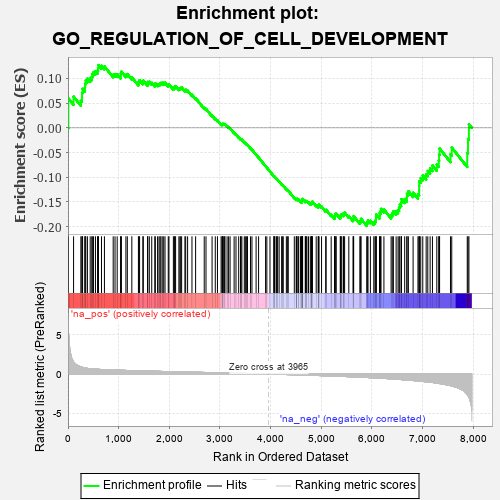
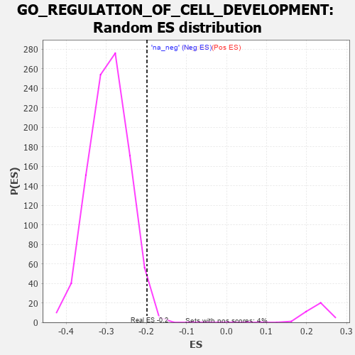

| | | Dataset | 7d |
| Phenotype | NoPhenotypeAvailable |
| Upregulated in class | na_neg |
| GeneSet | GO_REGULATION_OF_CELL_DEVELOPMENT |
| Enrichment Score (ES) | -0.19856924 |
| Normalized Enrichment Score (NES) | -0.6776532 |
| Nominal p-value | 0.9865005 |
| FDR q-value | 1.0 |
| FWER p-Value | 1.0 |
Table: GSEA Results Summary

Fig 1: Enrichment plot: GO_REGULATION_OF_CELL_DEVELOPMENT
Profile of the Running ES Score & Positions of GeneSet Members on the Rank Ordered List
| PROBE | GENE SYMBOL | GENE_TITLE | RANK IN GENE LIST | RANK METRIC SCORE | RUNNING ES | CORE ENRICHMENT | | 1 | SYT2 | | | 8 | 5.577 | 0.0597 | No |
| 2 | DISP3 | | | 110 | 1.525 | 0.0633 | No |
| 3 | LBX1 | | | 254 | 0.929 | 0.0550 | No |
| 4 | HGF | | | 276 | 0.870 | 0.0618 | No |
| 5 | SOX14 | | | 278 | 0.859 | 0.0710 | No |
| 6 | SHOX2 | | | 288 | 0.842 | 0.0791 | No |
| 7 | WEE2 | | | 333 | 0.766 | 0.0817 | No |
| 8 | DLL1 | | | 337 | 0.760 | 0.0896 | No |
| 9 | GSK3A | | | 351 | 0.745 | 0.0961 | No |
| 10 | AXIN2 | | | 383 | 0.713 | 0.0999 | No |
| 11 | RRN3 | | | 438 | 0.667 | 0.1002 | No |
| 12 | LRP1 | | | 470 | 0.648 | 0.1032 | No |
| 13 | CDC20 | | | 480 | 0.644 | 0.1091 | No |
| 14 | MYOD1 | | | 504 | 0.628 | 0.1130 | No |
| 15 | SRF | | | 542 | 0.615 | 0.1149 | No |
| 16 | DDX56 | | | 584 | 0.600 | 0.1161 | No |
| 17 | PITX3 | | | 594 | 0.596 | 0.1215 | No |
| 18 | FBXW8 | | | 601 | 0.594 | 0.1272 | No |
| 19 | HES5 | | | 661 | 0.571 | 0.1258 | No |
| 20 | ID1 | | | 719 | 0.555 | 0.1245 | No |
| 21 | HMGB2 | | | 892 | 0.507 | 0.1079 | No |
| 22 | SF3A2 | | | 928 | 0.500 | 0.1088 | No |
| 23 | DVL3 | | | 971 | 0.490 | 0.1088 | No |
| 24 | AKT1 | | | 1040 | 0.476 | 0.1052 | No |
| 25 | YAP1 | | | 1041 | 0.475 | 0.1104 | No |
| 26 | MEF2C | | | 1054 | 0.473 | 0.1140 | No |
| 27 | EMX1 | | | 1143 | 0.455 | 0.1076 | No |
| 28 | RFX3 | | | 1171 | 0.451 | 0.1090 | No |
| 29 | WDR36 | | | 1260 | 0.437 | 0.1024 | No |
| 30 | FKBP4 | | | 1390 | 0.412 | 0.0903 | No |
| 31 | DOCK7 | | | 1398 | 0.410 | 0.0939 | No |
| 32 | CARM1 | | | 1413 | 0.408 | 0.0965 | No |
| 33 | TIMP2 | | | 1478 | 0.394 | 0.0926 | No |
| 34 | IFRD1 | | | 1486 | 0.392 | 0.0959 | No |
| 35 | CNTN4 | | | 1571 | 0.379 | 0.0893 | No |
| 36 | FZD1 | | | 1574 | 0.379 | 0.0931 | No |
| 37 | RNF6 | | | 1605 | 0.373 | 0.0933 | No |
| 38 | ESRP1 | | | 1653 | 0.364 | 0.0912 | No |
| 39 | TRAK1 | | | 1714 | 0.354 | 0.0874 | No |
| 40 | MEIS1 | | | 1723 | 0.351 | 0.0901 | No |
| 41 | LLPH | | | 1768 | 0.343 | 0.0882 | No |
| 42 | THOC2 | | | 1796 | 0.338 | 0.0884 | No |
| 43 | FMR1 | | | 1816 | 0.334 | 0.0896 | No |
| 44 | RNF10 | | | 1833 | 0.331 | 0.0912 | No |
| 45 | SMAD4 | | | 1860 | 0.326 | 0.0914 | No |
| 46 | PAK3 | | | 1889 | 0.322 | 0.0913 | No |
| 47 | DDX6 | | | 1915 | 0.318 | 0.0915 | No |
| 48 | BRSK2 | | | 1979 | 0.308 | 0.0867 | No |
| 49 | ROR1 | | | 1993 | 0.306 | 0.0884 | No |
| 50 | LRRC7 | | | 2080 | 0.294 | 0.0805 | No |
| 51 | LSM1 | | | 2098 | 0.291 | 0.0815 | No |
| 52 | BMP7 | | | 2107 | 0.290 | 0.0836 | No |
| 53 | ISLR2 | | | 2124 | 0.287 | 0.0847 | No |
| 54 | C1QBP | | | 2189 | 0.278 | 0.0795 | No |
| 55 | OTP | | | 2209 | 0.275 | 0.0800 | No |
| 56 | MYLIP | | | 2225 | 0.272 | 0.0810 | No |
| 57 | CREB1 | | | 2243 | 0.269 | 0.0818 | No |
| 58 | REST | | | 2308 | 0.259 | 0.0764 | No |
| 59 | SCRT1 | | | 2323 | 0.257 | 0.0774 | No |
| 60 | SIN3A | | | 2361 | 0.251 | 0.0753 | No |
| 61 | KDM1A | | | 2447 | 0.237 | 0.0670 | No |
| 62 | NUMB | | | 2519 | 0.224 | 0.0603 | No |
| 63 | DSCAM | | | 2689 | 0.200 | 0.0407 | No |
| 64 | SLIT2 | | | 2724 | 0.195 | 0.0384 | No |
| 65 | NR2E1 | | | 2844 | 0.177 | 0.0250 | No |
| 66 | ZC4H2 | | | 2907 | 0.164 | 0.0188 | No |
| 67 | RAB17 | | | 2950 | 0.157 | 0.0151 | No |
| 68 | ULK4 | | | 3022 | 0.146 | 0.0076 | No |
| 69 | UFL1 | | | 3041 | 0.144 | 0.0068 | No |
| 70 | SRRT | | | 3050 | 0.143 | 0.0073 | No |
| 71 | FEZ1 | | | 3055 | 0.142 | 0.0084 | No |
| 72 | MAP2 | | | 3074 | 0.140 | 0.0076 | No |
| 73 | HDAC1 | | | 3086 | 0.138 | 0.0077 | No |
| 74 | RREB1 | | | 3099 | 0.137 | 0.0076 | No |
| 75 | TLX3 | | | 3140 | 0.131 | 0.0039 | No |
| 76 | PAX6 | | | 3170 | 0.127 | 0.0015 | No |
| 77 | TWF1 | | | 3199 | 0.123 | -0.0007 | No |
| 78 | CTDP1 | | | 3279 | 0.109 | -0.0097 | No |
| 79 | PARP2 | | | 3316 | 0.103 | -0.0132 | No |
| 80 | SMAD7 | | | 3369 | 0.093 | -0.0189 | No |
| 81 | MED1 | | | 3405 | 0.089 | -0.0225 | No |
| 82 | KIF1A | | | 3415 | 0.088 | -0.0227 | No |
| 83 | SARM1 | | | 3432 | 0.086 | -0.0238 | No |
| 84 | CDK5 | | | 3480 | 0.080 | -0.0290 | No |
| 85 | FES | | | 3501 | 0.077 | -0.0307 | No |
| 86 | PQBP1 | | | 3526 | 0.072 | -0.0330 | No |
| 87 | PIN1 | | | 3543 | 0.069 | -0.0343 | No |
| 88 | STK25 | | | 3602 | 0.059 | -0.0412 | No |
| 89 | HES2 | | | 3631 | 0.055 | -0.0442 | No |
| 90 | NF1 | | | 3713 | 0.040 | -0.0542 | No |
| 91 | SKI | | | 3762 | 0.032 | -0.0600 | No |
| 92 | NIPBL | | | 3900 | 0.010 | -0.0775 | No |
| 93 | NRG3 | | | 3925 | 0.005 | -0.0806 | No |
| 94 | EYA1 | | | 3987 | -0.006 | -0.0884 | No |
| 95 | SFRP2 | | | 4065 | -0.018 | -0.0981 | No |
| 96 | ROBO2 | | | 4066 | -0.018 | -0.0979 | No |
| 97 | CSF1 | | | 4074 | -0.019 | -0.0986 | No |
| 98 | WNT2 | | | 4084 | -0.021 | -0.0995 | No |
| 99 | MTOR | | | 4114 | -0.025 | -0.1030 | No |
| 100 | ABL1 | | | 4125 | -0.027 | -0.1040 | No |
| 101 | CRK | | | 4139 | -0.031 | -0.1053 | No |
| 102 | GFI1 | | | 4168 | -0.037 | -0.1085 | No |
| 103 | UNC5D | | | 4217 | -0.044 | -0.1142 | No |
| 104 | ARPC2 | | | 4232 | -0.047 | -0.1155 | No |
| 105 | GAK | | | 4249 | -0.050 | -0.1170 | No |
| 106 | SYT17 | | | 4310 | -0.061 | -0.1241 | No |
| 107 | OPA1 | | | 4330 | -0.065 | -0.1258 | No |
| 108 | FIG4 | | | 4348 | -0.068 | -0.1273 | No |
| 109 | LRRK2 | | | 4467 | -0.087 | -0.1415 | No |
| 110 | MOB2 | | | 4504 | -0.095 | -0.1451 | No |
| 111 | ILK | | | 4510 | -0.096 | -0.1447 | No |
| 112 | SNW1 | | | 4514 | -0.096 | -0.1440 | No |
| 113 | NPTN | | | 4519 | -0.098 | -0.1435 | No |
| 114 | NTRK2 | | | 4543 | -0.104 | -0.1453 | No |
| 115 | ABI2 | | | 4554 | -0.106 | -0.1454 | No |
| 116 | SYT4 | | | 4590 | -0.116 | -0.1487 | No |
| 117 | GATA3 | | | 4614 | -0.120 | -0.1503 | No |
| 118 | ATOH1 | | | 4615 | -0.121 | -0.1490 | No |
| 119 | DLG5 | | | 4619 | -0.121 | -0.1481 | No |
| 120 | RAB21 | | | 4620 | -0.122 | -0.1468 | No |
| 121 | SPEN | | | 4621 | -0.122 | -0.1454 | No |
| 122 | SDK1 | | | 4627 | -0.124 | -0.1447 | No |
| 123 | LMX1A | | | 4631 | -0.124 | -0.1438 | No |
| 124 | LIMK1 | | | 4684 | -0.136 | -0.1490 | No |
| 125 | PTK7 | | | 4687 | -0.136 | -0.1478 | No |
| 126 | ARF6 | | | 4704 | -0.140 | -0.1483 | No |
| 127 | LHX2 | | | 4716 | -0.143 | -0.1482 | No |
| 128 | FBLN1 | | | 4748 | -0.149 | -0.1505 | No |
| 129 | RTN4 | | | 4783 | -0.154 | -0.1532 | No |
| 130 | TERT | | | 4801 | -0.157 | -0.1537 | No |
| 131 | TNIK | | | 4804 | -0.158 | -0.1522 | No |
| 132 | P2RX4 | | | 4813 | -0.161 | -0.1515 | No |
| 133 | FBXW7 | | | 4816 | -0.161 | -0.1500 | No |
| 134 | WDR1 | | | 4824 | -0.163 | -0.1491 | No |
| 135 | MARK2 | | | 4899 | -0.177 | -0.1567 | No |
| 136 | FZD4 | | | 4940 | -0.186 | -0.1599 | No |
| 137 | EP300 | | | 4941 | -0.186 | -0.1578 | No |
| 138 | XRCC5 | | | 4946 | -0.187 | -0.1563 | No |
| 139 | PRKDC | | | 4955 | -0.189 | -0.1553 | No |
| 140 | KLF4 | | | 5005 | -0.198 | -0.1594 | No |
| 141 | DRD2 | | | 5088 | -0.221 | -0.1676 | No |
| 142 | ITSN1 | | | 5094 | -0.222 | -0.1658 | No |
| 143 | SMO | | | 5195 | -0.247 | -0.1760 | No |
| 144 | PTEN | | | 5262 | -0.261 | -0.1817 | No |
| 145 | CDK1 | | | 5264 | -0.262 | -0.1789 | No |
| 146 | RIMS2 | | | 5272 | -0.265 | -0.1770 | No |
| 147 | EPHA4 | | | 5273 | -0.265 | -0.1741 | No |
| 148 | MAGI2 | | | 5295 | -0.269 | -0.1738 | No |
| 149 | CPNE9 | | | 5374 | -0.289 | -0.1807 | No |
| 150 | GRIN1 | | | 5381 | -0.291 | -0.1783 | No |
| 151 | DLG4 | | | 5388 | -0.293 | -0.1759 | No |
| 152 | SOX8 | | | 5404 | -0.296 | -0.1746 | No |
| 153 | CUX1 | | | 5437 | -0.304 | -0.1754 | No |
| 154 | IST1 | | | 5442 | -0.305 | -0.1726 | No |
| 155 | LRIG2 | | | 5460 | -0.310 | -0.1714 | No |
| 156 | FGFR1 | | | 5543 | -0.332 | -0.1784 | No |
| 157 | ROR2 | | | 5626 | -0.353 | -0.1851 | No |
| 158 | ASPM | | | 5637 | -0.358 | -0.1825 | No |
| 159 | G6PD | | | 5638 | -0.358 | -0.1786 | No |
| 160 | TLR2 | | | 5761 | -0.395 | -0.1900 | No |
| 161 | VAMP7 | | | 5777 | -0.399 | -0.1876 | No |
| 162 | TRPC6 | | | 5784 | -0.401 | -0.1840 | No |
| 163 | VLDLR | | | 5898 | -0.434 | -0.1938 | Yes |
| 164 | DOCK1 | | | 5908 | -0.438 | -0.1902 | Yes |
| 165 | STK11 | | | 5922 | -0.443 | -0.1871 | Yes |
| 166 | TTBK1 | | | 5969 | -0.460 | -0.1880 | Yes |
| 167 | RAC1 | | | 6036 | -0.484 | -0.1912 | Yes |
| 168 | JAG1 | | | 6060 | -0.494 | -0.1888 | Yes |
| 169 | CALR | | | 6077 | -0.499 | -0.1854 | Yes |
| 170 | FBN1 | | | 6080 | -0.499 | -0.1802 | Yes |
| 171 | DBNL | | | 6084 | -0.501 | -0.1752 | Yes |
| 172 | FEZF2 | | | 6150 | -0.519 | -0.1779 | Yes |
| 173 | ROCK1 | | | 6152 | -0.520 | -0.1724 | Yes |
| 174 | GRID2 | | | 6170 | -0.528 | -0.1688 | Yes |
| 175 | THRB | | | 6178 | -0.531 | -0.1639 | Yes |
| 176 | CDC42 | | | 6236 | -0.548 | -0.1653 | Yes |
| 177 | CDON | | | 6378 | -0.607 | -0.1768 | Yes |
| 178 | CDKL3 | | | 6401 | -0.618 | -0.1729 | Yes |
| 179 | PTPRD | | | 6423 | -0.629 | -0.1688 | Yes |
| 180 | SOX2 | | | 6477 | -0.652 | -0.1685 | Yes |
| 181 | TRPV4 | | | 6515 | -0.668 | -0.1660 | Yes |
| 182 | KANK1 | | | 6536 | -0.678 | -0.1612 | Yes |
| 183 | STK24 | | | 6550 | -0.684 | -0.1554 | Yes |
| 184 | ROBO1 | | | 6577 | -0.699 | -0.1511 | Yes |
| 185 | ARF1 | | | 6583 | -0.701 | -0.1442 | Yes |
| 186 | PTPRS | | | 6646 | -0.738 | -0.1441 | Yes |
| 187 | CERS2 | | | 6689 | -0.756 | -0.1413 | Yes |
| 188 | PAK1 | | | 6691 | -0.757 | -0.1332 | Yes |
| 189 | GSK3B | | | 6719 | -0.768 | -0.1283 | Yes |
| 190 | PAQR3 | | | 6812 | -0.819 | -0.1312 | Yes |
| 191 | PTPRF | | | 6908 | -0.872 | -0.1339 | Yes |
| 192 | LRP8 | | | 6931 | -0.889 | -0.1271 | Yes |
| 193 | MIB1 | | | 6932 | -0.890 | -0.1174 | Yes |
| 194 | SNX3 | | | 6934 | -0.893 | -0.1078 | Yes |
| 195 | DNM1L | | | 6963 | -0.913 | -0.1014 | Yes |
| 196 | CCR2 | | | 7003 | -0.939 | -0.0962 | Yes |
| 197 | CPNE5 | | | 7070 | -0.977 | -0.0941 | Yes |
| 198 | RYK | | | 7102 | -1.000 | -0.0872 | Yes |
| 199 | SYT1 | | | 7148 | -1.033 | -0.0817 | Yes |
| 200 | TSPO | | | 7194 | -1.065 | -0.0759 | Yes |
| 201 | CIB1 | | | 7280 | -1.152 | -0.0743 | Yes |
| 202 | GRN | | | 7319 | -1.194 | -0.0662 | Yes |
| 203 | EFHC2 | | | 7326 | -1.199 | -0.0539 | Yes |
| 204 | NGEF | | | 7335 | -1.209 | -0.0418 | Yes |
| 205 | DCC | | | 7550 | -1.470 | -0.0533 | Yes |
| 206 | TTPA | | | 7575 | -1.516 | -0.0399 | Yes |
| 207 | FYN | | | 7881 | -2.622 | -0.0506 | Yes |
| 208 | CAV3 | | | 7896 | -2.739 | -0.0226 | Yes |
| 209 | PI16 | | | 7914 | -2.948 | 0.0073 | Yes |
Table: GSEA details [plain text format]

Fig 2: GO_REGULATION_OF_CELL_DEVELOPMENT: Random ES distribution
Gene set null distribution of ES for GO_REGULATION_OF_CELL_DEVELOPMENT